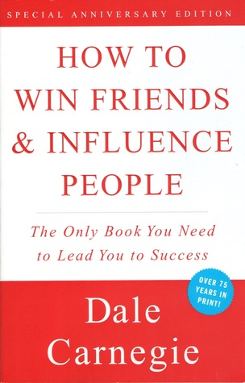

- Home
- Browse
 Five Point Someone
Five Point Someone
by Chetan Bhagat
Ratings
Five Point Someone is a story about three friends in IIT who are unable to cope.The book starts with a disclaimer, “This is not a book to teach you how to get into IIT or even how to live in college. In fact, it describes how screwed up things can get if you don’t think straight.”Three hostelmates – Alok, Hari and Ryan get off to a bad start in IIT – they screw up the first class quiz. And while they try to make amends, things only get worse. It takes them a while to realize: If you try and screw with the IIT system, it comes back to double screw you. ...Before they know it, they are at the lowest echelons of IIT society. They have a five-point-something GPA out of ten, ranking near the end of their class. This GPA is a tattoo that will remain with them, and come in the way of anything else that matters – their friendship, their future, their love life. While the world expects IITians to conquer the world, these guys are struggling to survive. The Subtle Art of Not giving f*ck:
The Subtle Art of Not giving f*ck:
A Counterintuitive approach to Living a Good Lifeby Mark Manson (Goodreads Author)
Ratings
In this generation-defining self-help guide, a superstar blogger cuts through the crap to show us how to stop trying to be "positive" all the time so that we can truly become better, happier people.For decades, we’ve been told that positive thinking is the key to a happy, rich life. "F**k positivity," Mark Manson says. "Let’s be honest, shit is f**ked and we have to live with it." In his wildly popular Internet blog, Manson doesn’t sugarcoat or equivocate.... He tells it like it is—a dose of raw, refreshing, honest truth that is sorely lacking todayThe Subtle Art of Not Giving a F**k is his antidote to the coddling, let’s-all-feel-good mindset that has infected American society and spoiled a generation, rewarding them with gold medals just for showing up.
 The Monk who sold his Ferrari
The Monk who sold his Ferrari
by Robin Sharma
Ratings
This inspiring tale provides a step-by-step approach to living with greater courage, balance, abundance, and joy. A wonderfully crafted fable, The Monk Who Sold His Ferrari tells the extraordinary story of Julian Mantle, a lawyer forced to confront the spiritual crisis of his out-of-balance life. On a life-changing odyssey ...to an ancient culture, he discovers powerful, wise, and practical lessons that teach us to: Develop Joyful Thoughts, Follow Our Life's Mission and Calling, Cultivate Self-Discipline and Act Courageously, Value Time as Our Most Important Commodity, Nourish Our Relationships, and Live Fully, One Day at a Time.
 Wings of Fire:An Autobiography
Wings of Fire:An Autobiography
by A.P.J. Abdul KalamArun Tiwari (Contributor)
Ratings
Avul Pakir Jainulabdeen Abdul Kalam, the son of a little-educated boat-owner in Rameswaram, Tamil Nadu, had an unparalleled career as a defence scientist, culminating in the highest civilian award of India, the Bharat Ratna. As chief of the country's defence research and development programme, Kalam demonstrated the great potential for dynamism and innovation that existed in seemingly moribund research establishments. This is the story of Kalam's rise from obscurity and his personal... and professional struggles, as well as the story of Agni, Prithvi, Akash, Trishul and Nag-missiles that have become household names in India and that have raised the nation to the level of a missile power of international reckoning. This is also the saga of independent India's struggle for technological self-sufficiency and defensive autonomy-a story as much about politics, domestic and international, as it is about science.
 The Immortals Of Meluha
The Immortals Of Meluha
(Shiva Trilogy #1)
by Amish Tripathi (Goodreads Author)
Ratings
1900 BC. In what modern Indians mistakenly call the Indus Valley Civilisation. The inhabitants of that period called it the land of Meluha a near perfect empire created many centuries earlier by Lord Ram, one of the greatest monarchs that ever lived. This once proud empire and its Suryavanshi rulers face severe perils as its primary river, the revered Saraswati, is slowly drying to extinction. They also face devastating terrorist attacks from the east, the land of the Chandravanshis....To make matters worse, the Chandravanshis appear to have allied with the Nagas, an ostracised and sinister race of deformed humans with astonishing martial skills! The only hope for the Suryavanshis is an ancient legend: When evil reaches epic proportions, when all seems lost, when it appears that your enemies have triumphed, a hero will emerge.Is the rough-hewn Tibetan immigrant Shiva, really that hero? And does he want to be that hero at all? Drawn suddenly to his destiny, by duty as well as by love, will Shiva lead the Suryavanshi vengeance and destroy evil?
 The Secret of Nagas
The Secret of Nagas
(Shiva Trilogy #2)
Ratings
by Amish Tripathi (Goodreads Author)
Today, He is a God.4000 years ago, He was just a man. The hunt is on. The sinister Naga warrior has killed his friend Brahaspati and now stalks his wife Sati. Shiva, the Tibetan immigrant who is the prophesied destroyer of evil, will not rest till he finds his demonic adversary. His vengeance and the path to evil will lead him to the door of the Nagas, the serpent people....Of that he is certain.The evidence of the malevolent rise of evil is everywhere. A kingdom is dying as it is held to ransom for a miracle drug. A crown prince is murdered. The Vasudevs Shivas philosopher guides betray his unquestioning faith as they take the aid of the dark side. Even the perfect empire, Meluha is riddled with a terrible secret in Maika, the city of births. Unknown to Shiva, a master puppeteer is playing a grand game. .
 The Oath of Vayuputras
The Oath of Vayuputras
(Shiva Trilogy #3)
by Amish Tripathi (Goodreads Author)
Ratings
ONLY A GOD CAN STOP IT. Shiva is gathering his forces. He reaches the Naga capital, Panchavati, and Evil is finally revealed. The Neelkanth prepares for a holy war against his true enemy, a man whose name instils dread in the fiercest of warriors.India convulses under the onslaught of a series of brutal battles. It's a war for the very soul of the nation....Many will die. But Shiva must not fail, no matter what the cost. In his desperation, he reaches out to the ones who have never offered any help to him: the Vayuputras.Will he succeed? And what will be the real cost of battling Evil? To India? And to Shiva's soul? Discover the answer to these mysteries in this concluding part of the bestselling Shiva Trilogy.My Experiments with Truth:
An Autobigraphy of Mahatma Gandhiby Mark Manson (Goodreads Author)
Ratings
"It is not my purpose to attempt a real autobiography. I simply want to tell the story of my numerous experiments with truth, and as my life consists of nothing but those experiments, it is true that the story will take the shape of an autobiography."The Story of My Experiments with Truth, the autobiography of Mahatma Gandhi, is a very popular and influential book. ....
Einstein:His life and Universeby Walter Isaacson (Goodreads Author)
Ratings
Einstein was a rebel and nonconformist from boyhood days, and these character traits drove both his life and his science. In this narrative, Walter Isaacson explains how his mind worked and the mysteries of the universe that he discovered. The Fault in Our stars
The Fault in Our stars
by John Green (Goodreads Author)
Ratings
Despite the tumor-shrinking medical miracle that has bought her a few years, Hazel has never been anything but terminal, her final chapter inscribed upon diagnosis. But when a gorgeous plot twist named Augustus Waters suddenly appears at Cancer Kid Support Group, Hazel's story is about to be completely rewritten....Insightful, bold, irreverent, and raw, The Fault in Our Stars is award-winning author John Green's most ambitious and heartbreaking work yet, brilliantly exploring the funny, thrilling, and tragic business of being alive and in love.
 Pride and Prejudice
Pride and Prejudice
by Jane Austen, Anna Quindlen (Introduction)
Ratings
Since its immediate success in 1813, Pride and Prejudice has remained one of the most popular novels in the English language. Jane Austen called this brilliant work "her own darling child" and its vivacious heroine, Elizabeth Bennet, "as delightful a creature as ever appeared in print." The romantic clash between the opinionated Elizabeth and her proud beau, Mr. Darcy, is a splendid performance of civilized sparring. And...Jane Austen's radiant wit sparkles as her characters dance a delicate quadrille of flirtation and intrigue, making this book the most superb comedy of manners of Regency England.
 To Kill a Mockingbird
To Kill a Mockingbird
by Harper Lee
Ratings
The unforgettable novel of a childhood in a sleepy Southern town and the crisis of conscience that rocked it, To Kill A Mockingbird became both an instant bestseller and a critical success when it was first published in 1960. It went on to win the Pulitzer Prize in 1961 and was later made into an Academy Award-winning film, also a classic.Compassionate, dramatic, and deeply moving, To Kill A Mockingbird takes readers to the roots of human behavior - to innocence and experience, kindness and cruelty, love and hatred, humor and pathos.... Now with over 18 million copies in print and translated into forty languages, this regional story by a young Alabama woman claims universal appeal. Harper Lee always considered her book to be a simple love story. Today it is regarded as a masterpiece of American literature.
Revolution 2020by Chetan Bhagat
Ratings
Book Summary of Revolution 2020 Once upon a time, in small-town India, there lived two intelligent boys. One wanted to use his intelligence to make money. One wanted to use his intelligence to create a revolution. The problem was, they both loved the same girl. Welcome to Revolution 2020. A story about childhood friends Gopal, Raghav and Aarti who struggle to find success and love in Varanasi. However, it isn't easy to achieve this in an unfair society that rewards the corrupt...
 The Magic of Thinking Big
The Magic of Thinking Big
by David J. Schwartz
Ratings
The Magic of Thinking Big gives you useful methods, not empty promises. Dr. Schwartz presents a carefully designed program for getting the most out of your job, your marriage and family life, and your community. He proves that you don't need to be an intellectual or have innate talent to attain great success and satisfaction, but you do need to learn and understand the habit of thinking and behaving in ways that will get you there
 Rich Dad, Poor Dad
Rich Dad, Poor Dad
by Robert T. Kiyosaki, Sharon Lechter
Ratings
Rich Dad Poor Dad is Robert's story of growing up with two dads — his real father and the father of his best friend, his "rich dad" — and the ways in which both men shaped his thoughts about money and investing. The book explodes the myth that you need to earn a high income to be rich and explains the difference between working for money and having your money work for you. Think and Grow Rich
Think and Grow Rich
by Napoleon Hill,
Ben Holden-Crowther (Goodreads Author)
Ratings
This is the original 1937 version of Napoleon Hill's Classic Book: Think and Grow Rich. To the greatest extent possible, the text and formatting have been kept exactly the same as in the original release with the exception of some minor formatting changes. How to Win Friends and Influence Peopleby Dale Carnegie
Ratings
You can go after the job you want...and get it! You can take the job you have...and improve it! You can take any situation you're in...and make it work for you! Since its release in 1936, How to Win Friends and Influence People has sold more than 15 million copies. Dale Carnegie's first book is a timeless bestseller, packed with rock-solid advice that has carried thousands of now famous people up the ladder of success in their business and personal lives. The 3 Mistakes of My Life
The 3 Mistakes of My Life
by Chetan Bhagat
Ratings
In late-2000, a young boy in Ahmedabad called Govind dreamt of having a business. To accomodate his friends Ish and Omi's passion, they open a cricket shop. Govind's wants to make money and thinks big. Ish is all about nurturing Ali, the batsman with a rare gift. Omi knows his limited capabiltiies and just wants to be with his friends. However, nothing comes easy... in a turbulent city. To realize their goals, they will have to face it all - religious politics, earthquakes, riots, unacceptable love and above all, their own mistakes. Will they make it? Can an individual's dreams overcome the nightmares offered by real life? Can we succeed despite a few mistakes?
Five Point Someone
by Chetan Bhagat
Ratings
Five Point Someone is a story about three friends in IIT who are unable to cope.The book starts with a disclaimer, “This is not a book to teach you how to get into IIT or even how to live in college. In fact, it describes how screwed up things can get if you don’t think straight.”Three hostelmates – Alok, Hari and Ryan get off to a bad start in IIT – they screw up the first class quiz. And while they try to make amends, things only get worse. It takes them a while to realize: If you try and screw with the IIT system, it comes back to double screw you. ...Before they know it, they are at the lowest echelons of IIT society. They have a five-point-something GPA out of ten, ranking near the end of their class. This GPA is a tattoo that will remain with them, and come in the way of anything else that matters – their friendship, their future, their love life. While the world expects IITians to conquer the world, these guys are struggling to survive.The Secretby Rhonda Byrne
Ratings
The Secret’s 10th Anniversary Edition includes a new foreword by Rhonda Byrne, and 10 of the most life-changing insights she’s had over the last 10 years of practicing and living The Secret every day. The 10 insights alone will accelerate your understanding and mastery of the law of attraction.